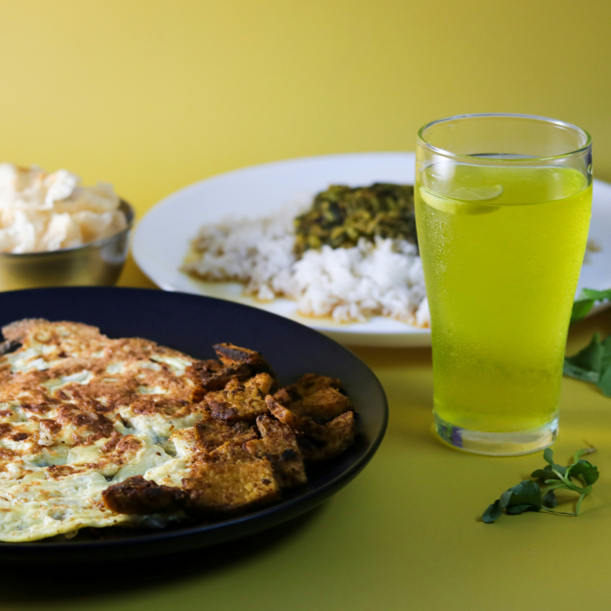

Comida casera y local, cerca de ti
Conecta con cocineros y restaurantes de tu barrio.
¿Cómo funciona PlatoX?
- Regístrate como cliente o cocinero/restaurante.
- Explora o publica menús deliciosos.
- Haz pedidos fácilmente dentro de tu zona.
- Recibe, disfruta y califica.
Beneficios para todos
Clientes
- Comida rica y casera sin salir de tu barrio.
- Apoya a cocineros y negocios locales.
- Encuentra nuevos sabores todos los días.
Cocineros y Restaurantes
- Llega a más personas de tu zona.
- Publica tus menús sin comisiones altas.
- Haz crecer tu clientela con facilidad.
¿Listo para empezar?
Únete a PlatoX hoy y transforma la forma en que disfrutas la comida de tu barrio.